Surajn Repeat
I design the thumbnail, shoot the film and cut the reel. One person, idea to final frame. Senior Visual Designer at Jar, with over 1000 videos shot.
Hello
I'm Suraj. Seven years in, and I still refuse to pick one job.
I started in a print shop in 2015, studied Communication Design at NIFT, and today I lead visuals at Jar, where the same brief often gets my design, my camera and my edit.
That is the pitch. When one person holds the idea from the first sketch to the final export, nothing gets lost between teams, and the campaign looks like one campaign. I also read the numbers: thumbnails get judged on CTR, and I design with that in mind.
Reels thumb-stoppers
A handful from over 1000 videos shot. Scroll sideways, click for sound.
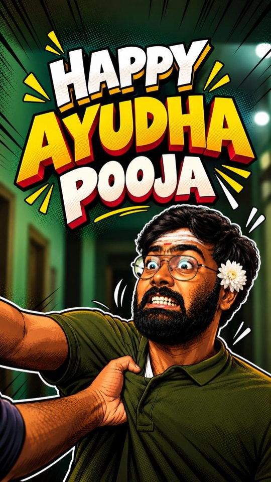
Featured▶ PlayAyudha Pooja
Festival reel / Jar Tamil / 61.4K views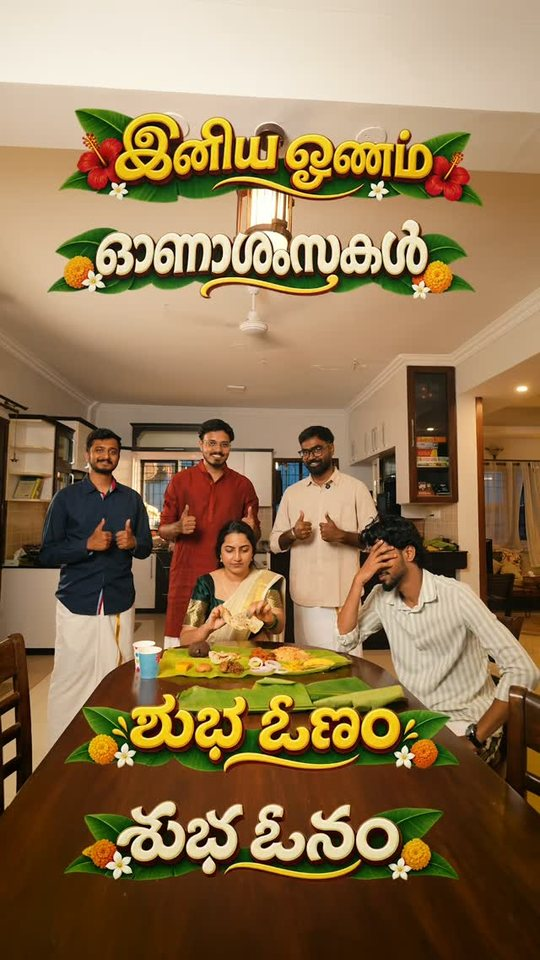
Featured▶ Play5 States, 1 Vibe
Onam reel / Jar Malayalam / 44.7K views- Featured▶ Play
Ask the Ghost
Halloween reel / Jar Tamil / 34.3K views
My most-watched reels on Jar's Instagram pages: 30M+ views across these 16 / Opens in Instagram
Films
Documentary, ads and employer branding, shot and cut to feel nothing like a company video.
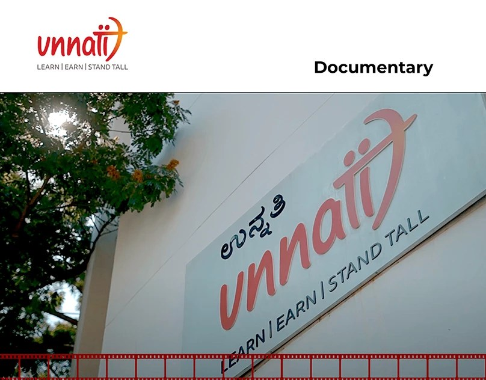
Watch on Behance ↗UNNATI
Short documentary / SGBS Unnati Foundation / Shot + editedYouth, vocational training and the road to dignified work.
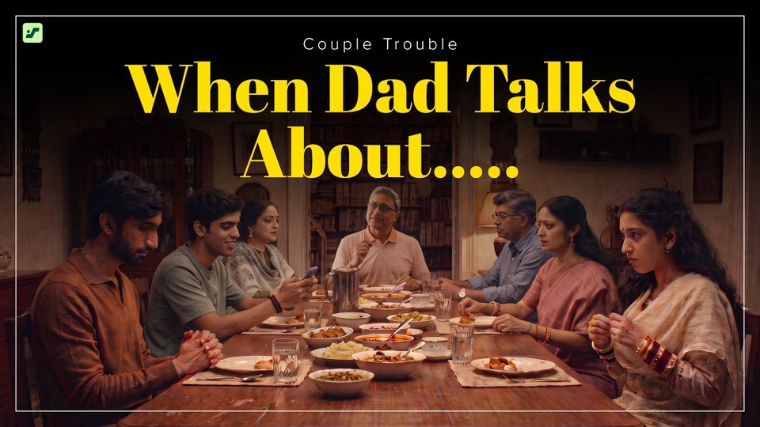
▶ WatchThe Family Intervention Nobody Saw Coming
Launch film / Sipse / 55 sec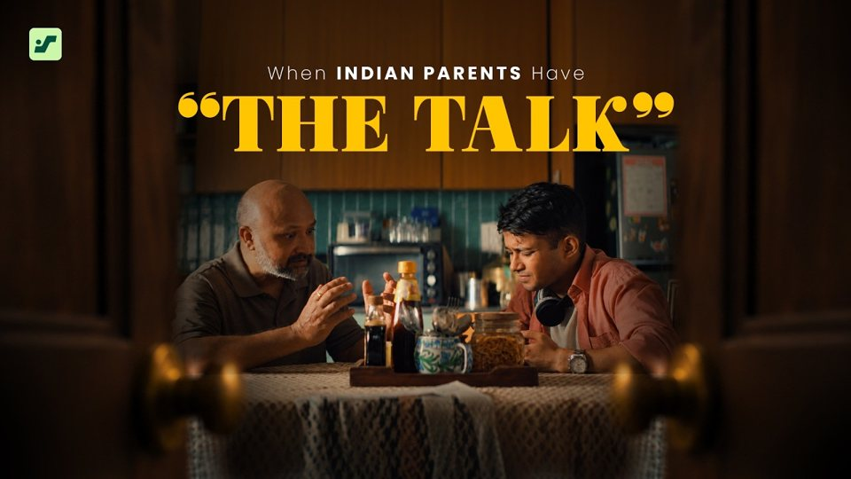
▶ WatchThe Most Awkward Father-Son Conversation Ever
Launch film / Sipse / 1 min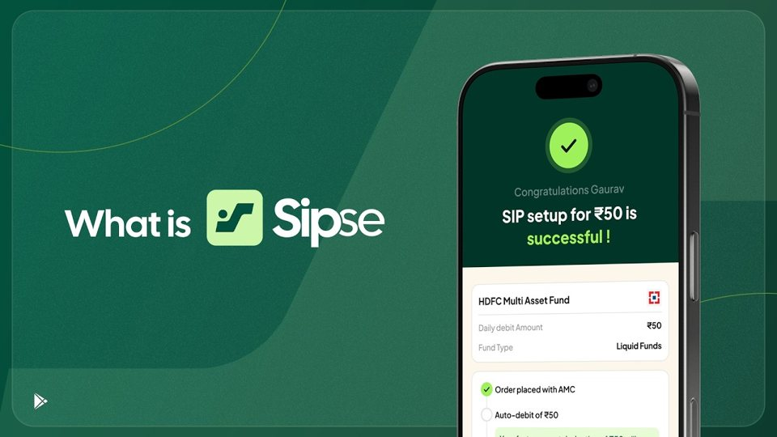
▶ WatchWhat Is Sipse?
App explainer / Sipse / 44 sec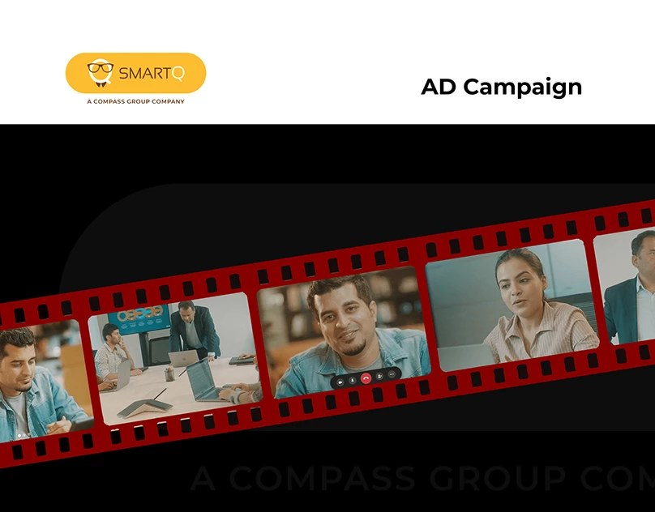
Watch on Behance ↗Fulfill Your Foodies
3-film ad campaign / SmartQ / Shot
Thumbnails the 1-second job
YouTube thumbnails for Jar, across Tamil, Malayalam, Telugu and Hindi audiences. The whole film has to fit in one frame. Pull the lever for another.
Long form
Shows and podcasts from Jar's and Sipse's YouTube channels. The guests talk for 40 minutes; the visuals have to keep up.
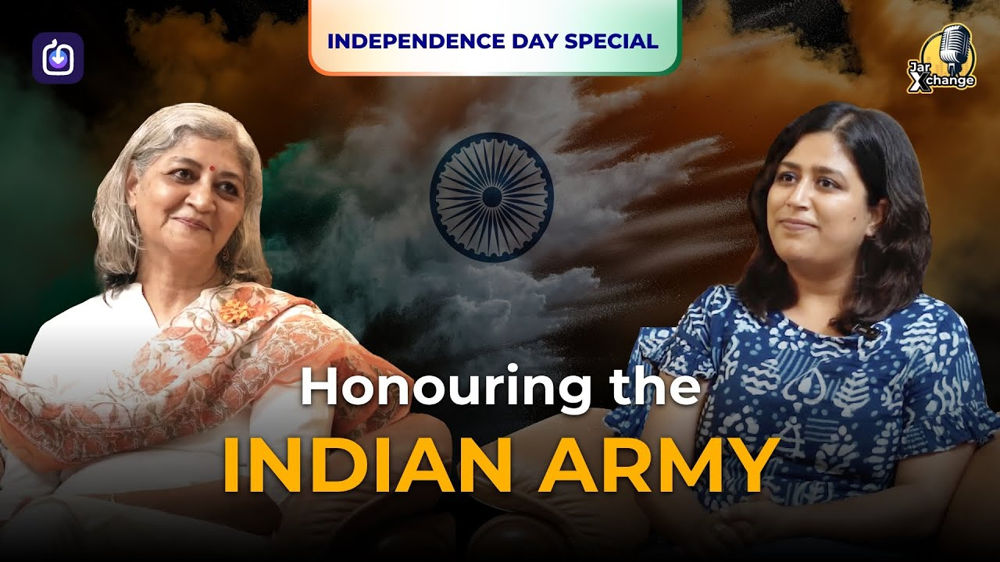
▶ WatchHonouring the Indian Army
Independence Day Special / JarXchange / 28 min / 30K views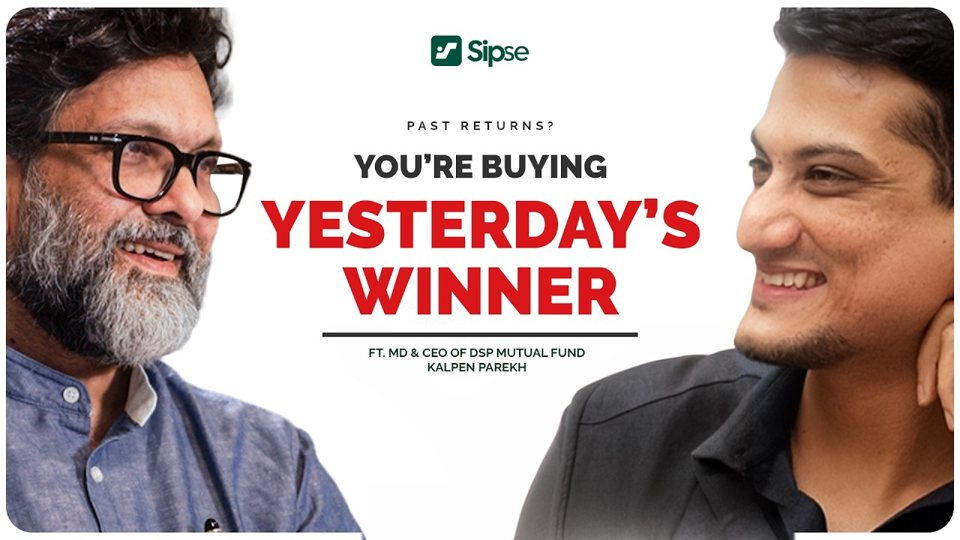
▶ WatchWhy Your SIP Returns Look So Low, with Kalpen Parekh
Sipse Podcast / 48 min / 15K views- ▶ Watch
Ankur Warikoo, Unfiltered
Jar App / 40 min 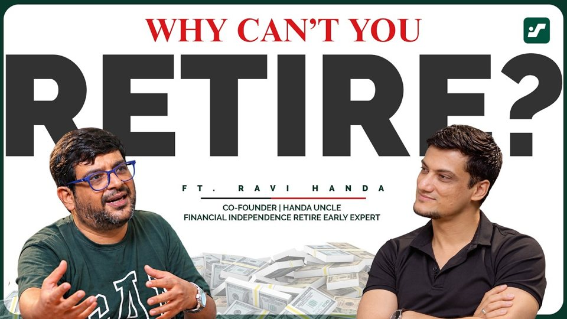
▶ WatchCan You Retire in Your 30s? with Ravi Handa
Sipse Podcast / 44 min / 8.2K views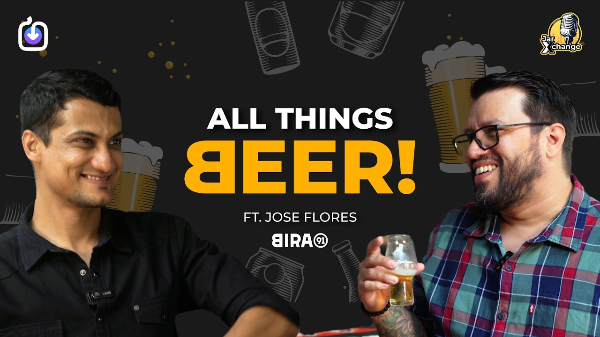
▶ WatchEverything About Beer, with Bira 91
JarXchange Ep 32 / 35 min- ▶ Watch
Should You Sell When Trump Makes Headlines?
Sipse Podcast / 37 min / 5.4K views - ▶ Watch
How Flipper Zero Is Used to Scam You
JarXchange / 9 min 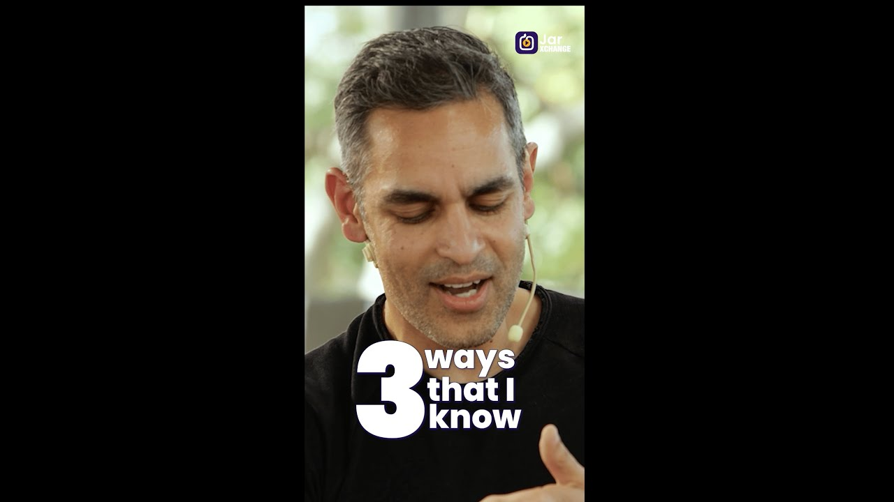
▶ WatchHow to Handle Hate on Social Media
JarXchange ft. Ankur Warikoo / 6 min
Packaging Bacca Bucci
A shoebox range for Bacca Bucci, one colour and one loud word per line.
Photo where it started
Mountains, rural Odisha and a little product work. It still shapes how I light everything else. Hover or tap a print to look closer.
- Rural Odisha
- The Mountains
- Rural Odisha
- Rural Odisha
- The Mountains
- Product
- The Mountains
- Rural Odisha
- The Mountains
- Rural Odisha
- Product
- The Mountains
- The Mountains
- The Mountains
- The Mountains
Safar so far…
- 2023 – Now
Jar
Senior Visual DesignerVisual design and creative strategy for brand and marketing campaigns. Shoots, edits, grading, motion, YouTube thumbnails, performance creatives and employer branding.
- 2022 – 2023
SmartQ
Visual DesignerMarketing and product visuals for digital and print, plus the photo and video behind them. End-to-end campaigns from concept to execution, including the 3-film Fulfill Your Foodies campaign.
- 2021 – 2022
Bacca Bucci
Visual Designer + Lead PhotographerMy first big job. Fashion social, e-commerce product shoots, packaging, and a music video shot across three cities with four editors.
- 2020 – 2021
Freelance
Designer + PhotographerDesign, photography and branding for clients including Godrej, Hettich and Aerolam.
- 2019 – 2020
Team Pumpkin + Stanmax
Designer + PhotographerAgency and retail work: storyboards, social content, UI and photo shoots.
- 2015 – 2019
Where it started
Print shop to photo studioUshodaya Offset Printers, V.S. Studios, VgetFresh and an NGO camera job. Wedding cards and banners taught me more than I expected.
- 2016 – 2020
NIFT
Communication DesignBachelor of Design at the National Institute of Fashion Technology.
Skills jo seekha
Design
Visual storytelling, thumbnails, brand identity, campaign design, packaging, typography, performance creatives.
Direction
Concepts, storyboards, production, shoots start to finish, and leading and mentoring creative teams.
Edit + Motion
Editing, colour grading, motion graphics, audio clean-up, vertical and long form.
Photo
Product, fashion, event and portrait photography, plus the retouching after.
- Photoshop
- Illustrator
- After Effects
- Premiere Pro
- Audition
- DaVinci Resolve
- Figma
- Midjourney
- Firefly
- Kling
- Sora
- Gemini